08:00–08:30
Budget Car Rental Hakata Gion 取車
🚗 取車前注意事項 / 行車重點提醒⌄
取車前注意事項
- 取車時間預估：(總計約 30 - 60 分鐘)。
- ETC 卡確認：現場取車時請務必確認 ETC 卡是否已插入機器並能正常運作。
- 外觀拍照錄影：取車時與店員巡視車身，若有任何細微刮痕或凹痕應立即提出，並建議自行拍照或錄影存證，避免還車糾紛。
- 功能確認：檢查燈光（頭燈、轉向燈）、雨刷、空調是否正常，並熟悉導航系統的操作。
- 油品種類/油量確認：通常是加Regular（レギュラー，紅色油槍），確認油箱是否有加滿。
- 應急處理：索取中文緊急聯絡卡、確認三角架位置。
行車重點提醒
- 日本為右駕。請隨時默念口訣：「左小轉、右大轉」。
- 高速路段為主：注意速限與測速照相，保持車距。
- 經過收費站時，務必找有紫色「ETC」標誌的車道，並減速至 20km/h 以下讓感應器讀取。
- 在山路彎道或叉路時，特別容易因為習慣而開錯車道，務必跟著前車或注意地面箭頭標示。
09:20–
09:40
09:40
山田服務區（首選）／玖珠（第2選擇）
10:30–
13:30
13:30
由布院 ＆ 金鱗湖
🅿 停車建議⌄
- 至湯布院中央児童公園，周邊：湯布院停車場 (Yufuin Parking Lot)，不限時平日￥300，需自行準備零錢投進料金箱，步行至觀光大街約 3 分鐘。如遇停滿：NPC24H 湯布院湯之坪街道停車場。
- 金鱗湖入口處：金鱗湖入口前駐車場 (Kinrinkoiriguchizen Parking Lot)，位置在湖畔入口正對面，單日￥400，進場道路較窄，行駛時請多加留意行人。如遇停滿：Times 湯布院金鱗湖 (Times Yufuin Lake Kinrin)、湯布院停車場 (Yufuin Parking Lot)。
📷 停車位置參考
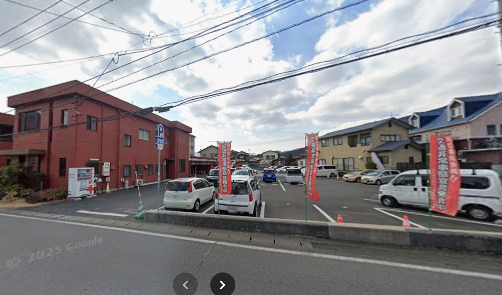
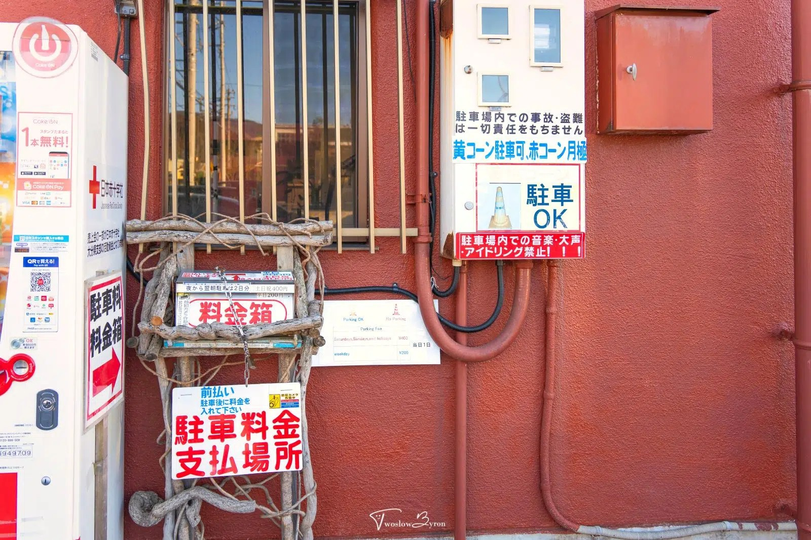
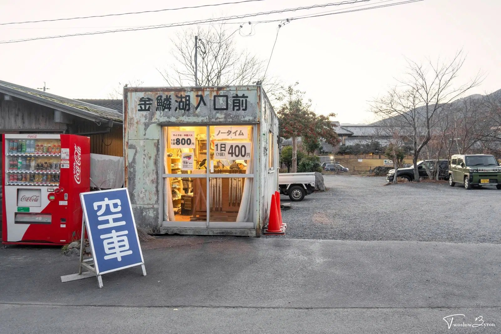
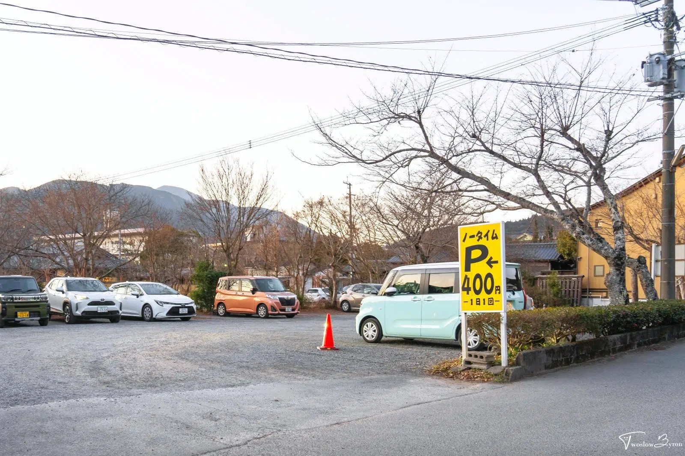
📍由布院（又稱湯布院），以夢幻的「金鱗湖」、時尚的「湯之坪街道」和精緻的溫泉旅館聞名，是日本湧泉量第二大的著名溫泉勝地。
📷 由布院散策

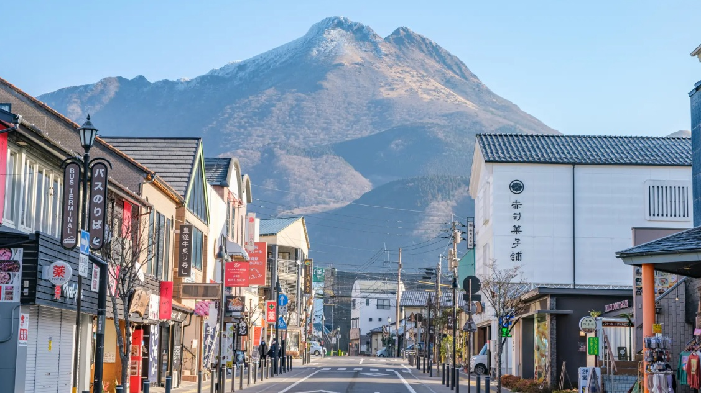

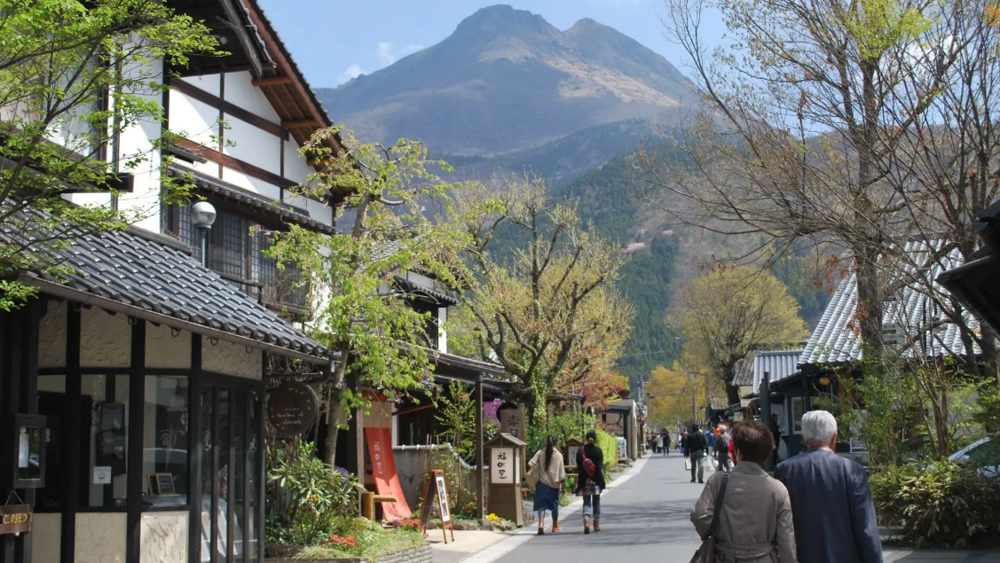

🍢 由布院午餐、小食
🍱 午餐推薦
由布まぶし 心 (金鱗湖店)｜由布院最紅一鍋三吃(原味、配料、茶泡飯)，可選豐後牛、鰻魚或地雞，餐廳在金鱗湖入口前駐車場旁，停好車先衝去餐廳現場登記(寫名字/抽號)。
🍡 邊走邊吃
金賞可樂餅｜本店位置較靠近金鱗湖，招牌必點是「金賞可樂餅」。
花麴菊家｜布丁銅鑼燒 (Pudding Dorayaki) 是該店最人氣商品，3 月常有季節限定口味（如草莓布丁或甘王草莓內餡）。
B-SPEAK 蛋糕卷｜小份 (1/3) 通常在 11:00 前售罄，若 10:30 以後才到由布院，建議停好車先去預約或購買，再回來逛街。


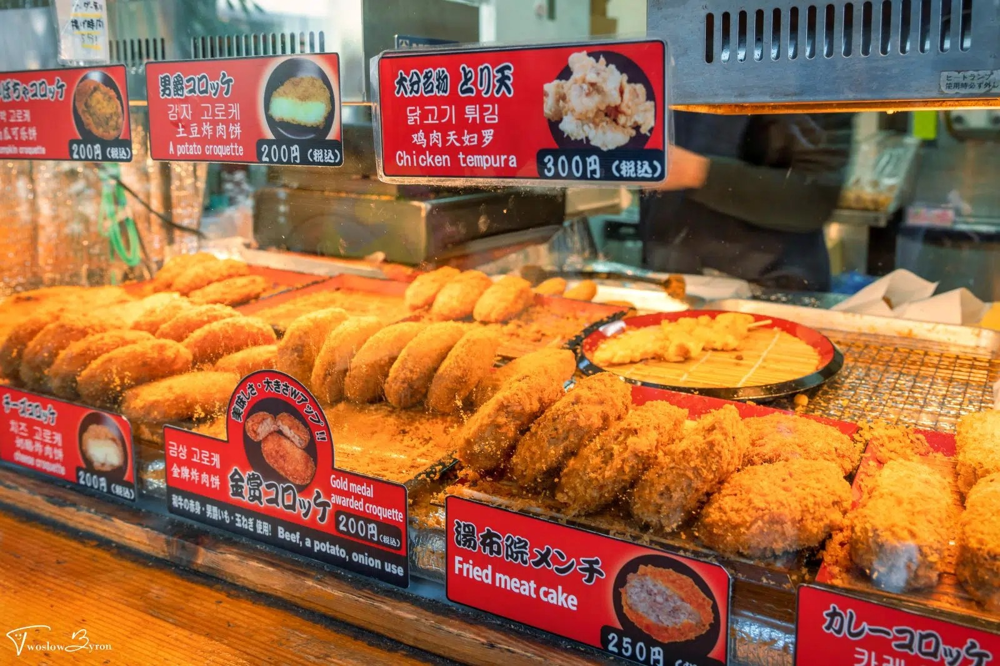
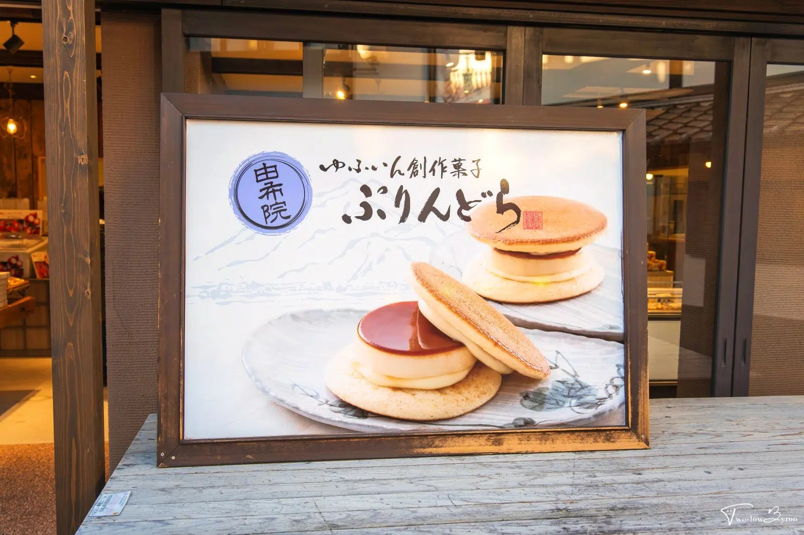

13:45–
14:15
14:15
狭霧台
15:00–
16:00
16:00
九重「夢」大吊橋
📷 九重「夢」大吊橋
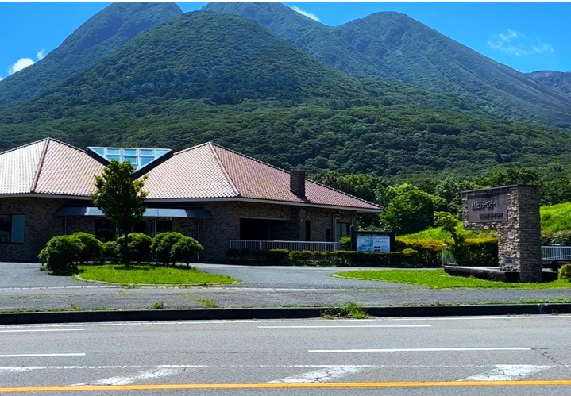
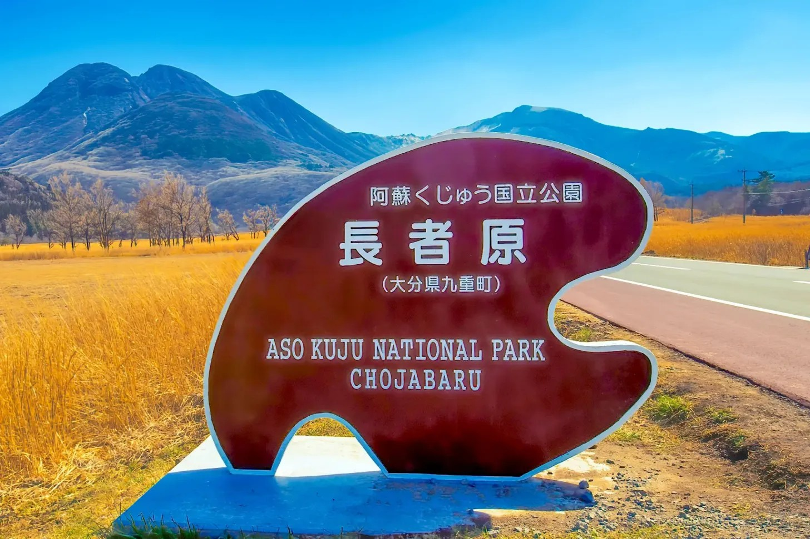


18:00
抵達 旅館華柚
📷 旅館華柚
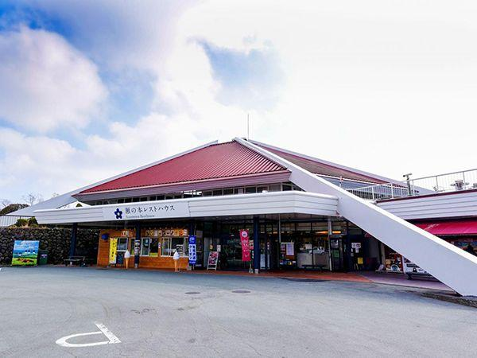
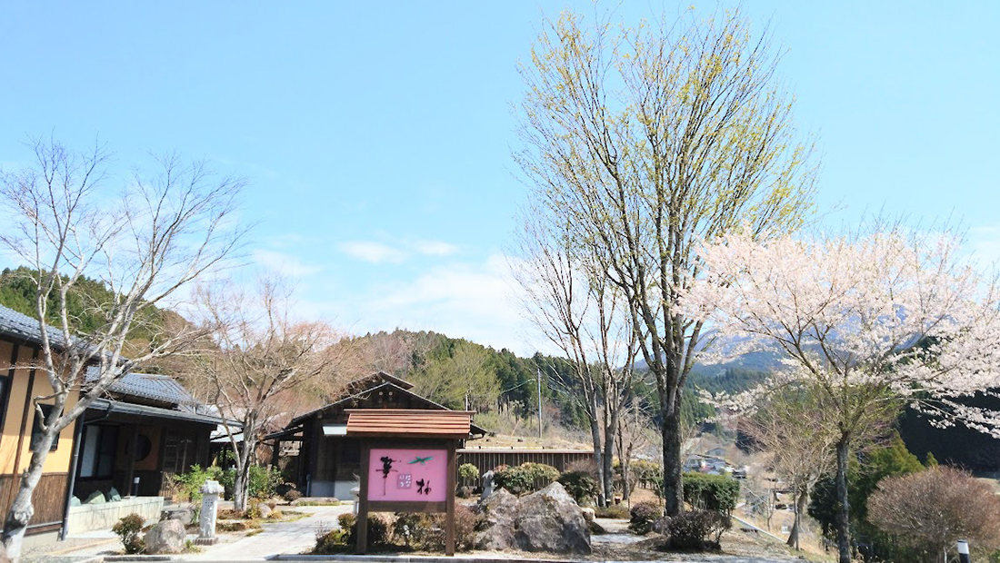


☔ 雨天備案⌄
- 由布院：改走室內，如 COMICO美術館、彩色玻璃美術館；或是享用甜點：專賣抹茶與地酒義式冰淇淋的 由布院之森（Telato）、室內空間舒適適合躲雨享用銅鑼燒的 鞠智 cucuchi。
- 九重：若霧大看不見瀑布，直接放棄吊橋，直奔 瀨之本休息站 採買。
- 終點：提早 Check-in 旅館華柚，享受雨中露天溫泉。